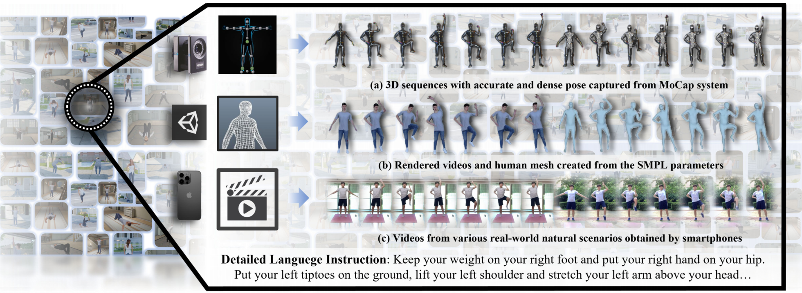

Bin Chen 研究方向 职位/单位
|
Bin Chen (陈斌) I am currently an Assistant Professor with the Department of Computer Science and TechnologyHarbin Institute of Technology, Shenzhen (HITSZ). I got my Ph.D. from the Department of Computer Science and Technology, Tsinghua University under the supervision of Prof. Shu-Tao Xia. I have also been fortunate to visit Prof. En-Hui Yang at the University of Waterloo (UW) from Dec 2019 to May 2020. My research interests include Coding theory and Information Theory, Machine Learning and Deep Learning. Tsinghua-Berkeley Shenzhen Institute. 占位符Placeholder占位符Placeholder占位符Placeholder占位符Placeholder占位符Placeholder占位符Placeholder占位符Placeholder占位符Placeholder占位符Placeholder占位符Placeholder 占位符Placeholder占位符Placeholder 占位符Placeholder占位符Placeholder占位符Placeholder占位符Placeholder占位符Placeholder占位符Placeholder占位符Placeholder占位符Placeholder占位符Placeholder占位符Placeholder 占位符Placeholder占位符Placeholder |
-
News -
2023-02: Two papers on human activity understanding got accepted by CVPR 2023. Two papers on human activity understanding got accepted by CVPR 2023. -
2023-02: Two papers on human activity understanding got accepted by CVPR 2023. -
2023-02: Two papers on human activity understanding got accepted by CVPR 2023. Tsinghua-Berkeley Shenzhen Institute. -
2023-02: Two papers on human activity understanding got accepted by CVPR 2023.
-
-
Publications * Equal Contribution, # Corresponding Author, click here for the full list.
 FLAG3D: A 3D Fitness Activity Dataset with Language Instruction
Yansong Tang*, Jinpeng Liu*, Aoyang Liu*, Bin Yang, Wenxun Dai, Yongming Rao, Jiwen Lu, Jie Zhou, Xiu Li
IEEE/CVF Conference on Computer Vision and Pattern Recognition (CVPR), 2023
[arXiv (initial version)] [Project Page]
We present FLAG3D, a large-scale 3D fitness activity dataset with language instruction.

LAVT: Language-Aware Vision Transformer for Referring Image Segmentation
Zhao Yang*, Jiaqi Wang*, Yansong Tang#, Kai Chen, Hengshuang Zhao, Philip H.S. Torr
IEEE/CVF Conference on Computer Vision and Pattern Recognition (CVPR), 2022
[arxiv] [code] [中文解读]
We present an end-to-end hierarchical Transformer-based network for referring segmentation.
-
Teaching -
Data Mining: Theory and Algorithms, Fall 2022 (with Prof. Xinlei Chen)
-
-
Awards&Honors 2022年度广东省计算机学会优秀论文二等奖;
2021年深圳市人工智能学会优秀博士论文 (排名第一);
2021年中国电子学会信息论分会优秀博士论文 (年度唯一);
清华大学计算机系优秀博士毕业生;
清华大学博士生国家奖学金2次, 2019/2020, Top 0.3%;
华南师范大学硕士生国家奖学金1次, 2015, Top 1%;
-
Group -
Data Mining: Theory and Algorithms, Fall 2022 (with Prof. Xinlei Chen)
-
-
Academic Services -
Journal Reviewer
IEEE Transactions on Information Theory
IEEE Transactions on Communications
IEEE communication letter
IEEE Access
IEICE Transactions on Fundamentals of Electronics, Communications, and Computer Sciences
IEICE Transactions on Information and Systems
Science China on Information Science
-
Conference Reviewer / Program Committee Member
2020 Neural Information Processing Systems (NeurIPS20)
2017 IEEE International Symposium on Information Theory (ISIT)
2020 /2021 IEEE Data Compression Conference (DCC)
2021 AAAI Conference on Artificial Intelligence (AAAI-21)
2021 International Joint Conference on Artificial Intelligence (IJCAI-21)
2021 IEEE/CVF Conference on Computer Vision and Pattern Recognition (CVPR)
-
AMS Mathematical Reviewer
-